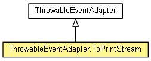

org.eclipse.net4j.util.event
Class ThrowableEventAdapter.ToPrintStream
java.lang.Object
 org.eclipse.net4j.util.event.ThrowableEventAdapter
org.eclipse.net4j.util.event.ThrowableEventAdapter.ToPrintStream
org.eclipse.net4j.util.event.ThrowableEventAdapter
org.eclipse.net4j.util.event.ThrowableEventAdapter.ToPrintStream
- All Implemented Interfaces:
- EventListener, IListener
- Enclosing class:
- ThrowableEventAdapter
- public static class ThrowableEventAdapter.ToPrintStream
- extends ThrowableEventAdapter

Prints the stack traces of throwable events to a PrintStream.
| Methods inherited from class java.lang.Object |
clone, equals, finalize, getClass, hashCode, notify, notifyAll, toString, wait, wait, wait |
CONSOLE
public static final ThrowableEventAdapter.ToPrintStream CONSOLE
ThrowableEventAdapter.ToPrintStream
public ThrowableEventAdapter.ToPrintStream(PrintStream out)
getOut
public final PrintStream getOut()
onThrowable
protected void onThrowable(INotifier source,
Throwable t)
- Overrides:
onThrowable in class ThrowableEventAdapter
Copyright (c) 2004 - 2012 Eike Stepper (Berlin, Germany) and others.